Internal page — August 7, 2026. Green = keeper (live or ready to publish) · Yellow = AI-detected (the app-processed files; evidence on each card) · Purple = not good enough but it’s all we’ve got (dated print scans still live on a site) · Red = rejected, with the reason · Amber = needs a decision or a re-shoot. Click any photo to enlarge. Shot-list chips show coverage per property: green = covered with a current usable shot, amber = covered only by an old/small/questionable shot, red = missing.
KeeperAI-detectedAll we’ve got (dated scan)Rejected (reason on the card)Needs review / re-shootSources: Dexter's 8/6 Drive folder shares, the 8/3–4 email batch (re-uploaded to Drive), and each property's live website.
Calvertowne Townhouses 29 photos
Refreshed 8/7 from the October 2025 vacant-unit walkthrough found in the Drive folder. The site now has its first hero banner and 12 real photos. The three older 'staged interior' images were identified as AI virtual-staging renders and removed from the site.
KEEP Second bedroom — weakest keeper; drop if a tighter gallery is wanted
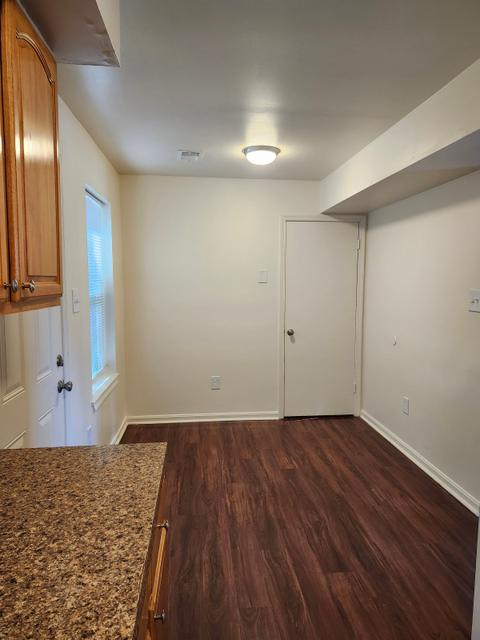
KEEP Dining nook off the kitchen
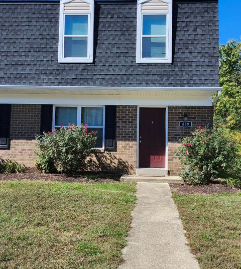
KEEP Building front, unit 839 — now the homepage hero (sky trimmed for the gallery)
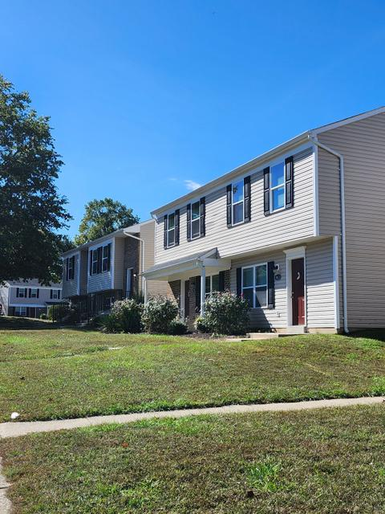
KEEP Angled townhouse row — second exterior
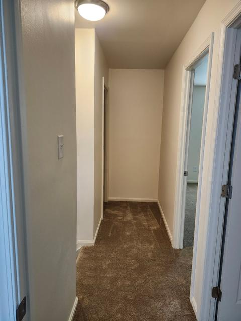
KEEP Upstairs hallway
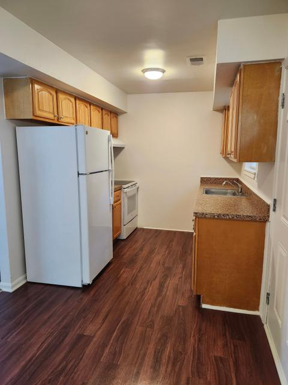
KEEP Galley kitchen, full appliances
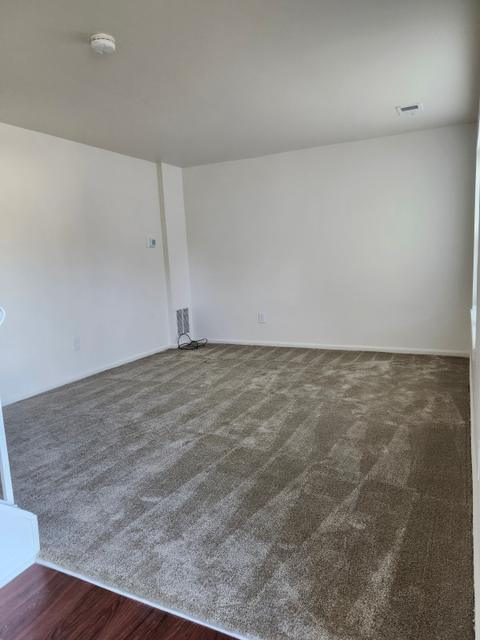
KEEP Living room, freshly cleaned
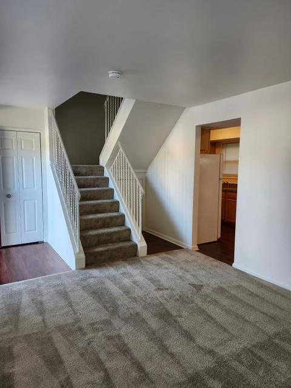
KEEP Living room with the staircase — shows the townhouse layout
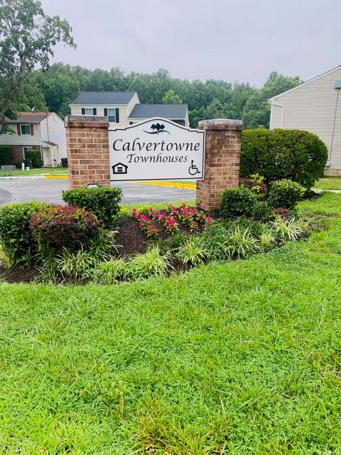
KEEP Monument sign — the sharper of the two sign shots
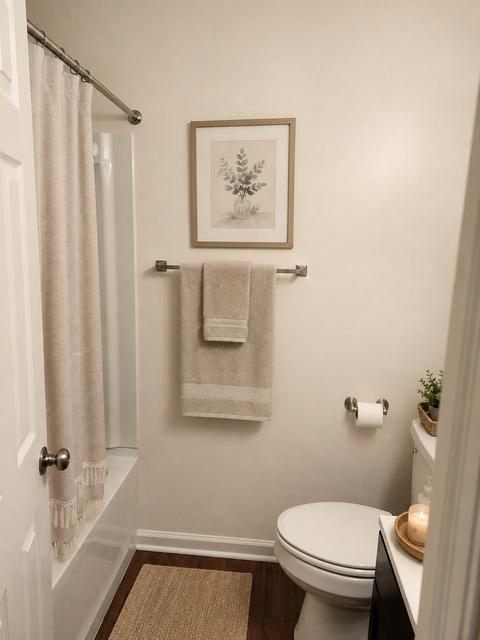
AI-DETECTED AI-processed (8/3–4 batch): PNG re-render, not a camera file
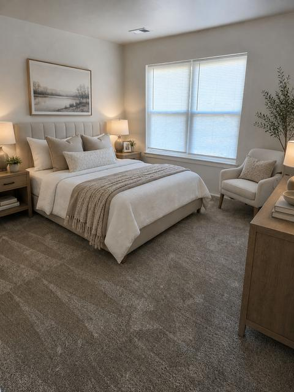
AI-DETECTED AI-processed (8/3–4 batch): rendered from the ~200 KB website copy of the bedroom
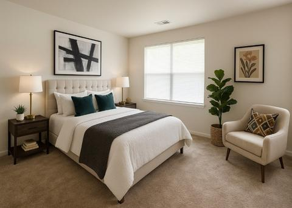
AI-DETECTED AI virtual-staging render pulled back off the website (~200 KB) — replaced by the real bedroom
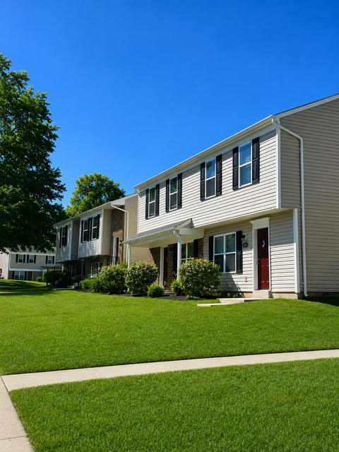
AI-DETECTED AI-processed (8/3–4 batch): PNG re-render, not a camera file
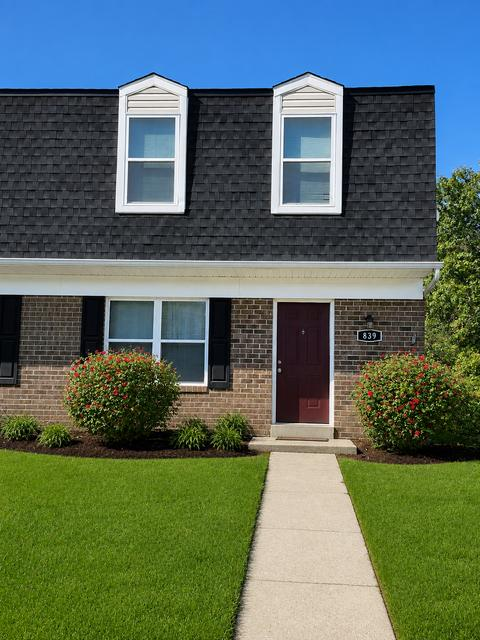
AI-DETECTED AI-processed (8/3–4 batch): PNG re-render, not a camera file
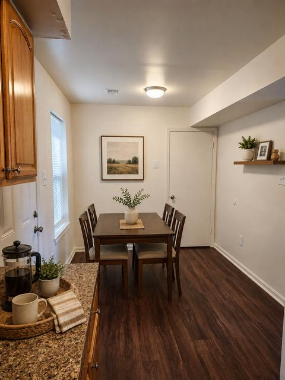
AI-DETECTED AI-processed (8/3–4 batch): rendered from the ~170 KB website copy of the kitchen, not from a camera file
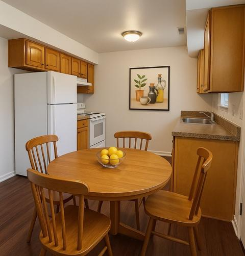
AI-DETECTED AI virtual-staging render pulled back off the website (~170 KB) — was live until 8/7, now replaced by the real kitchen
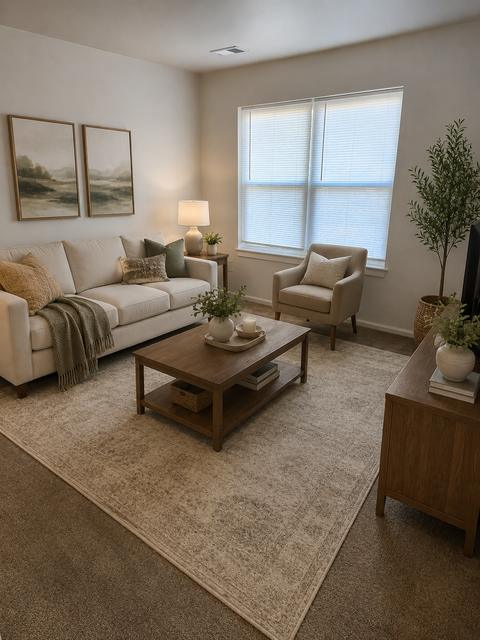
AI-DETECTED AI-processed (8/3–4 batch): rendered from the ~185 KB website copy of the living room
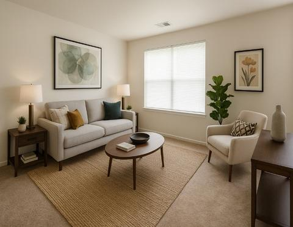
AI-DETECTED AI virtual-staging render pulled back off the website (~185 KB) — replaced by the real living room
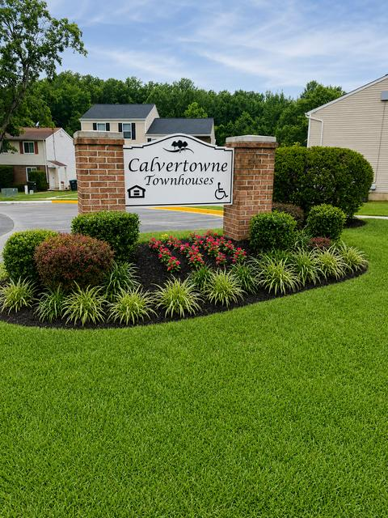
AI-DETECTED AI-processed (8/3–4 batch): PNG re-render, not a camera file
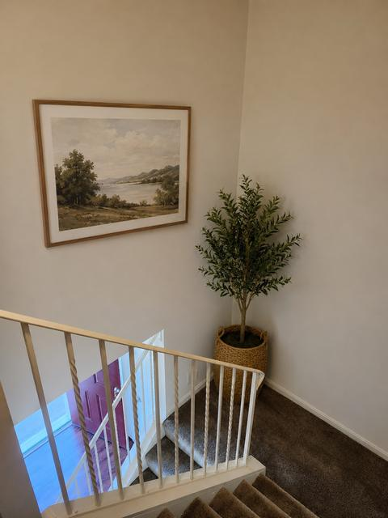
AI-DETECTED AI-processed (8/3–4 batch): PNG re-render, not a camera file
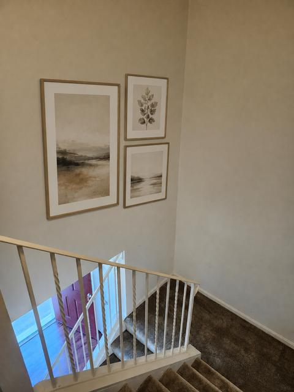
AI-DETECTED AI-processed (8/3–4 batch): PNG re-render, not a camera file
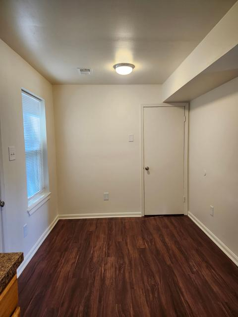
REJECT Same dining nook as the kept shot, one step to the right — adds nothing
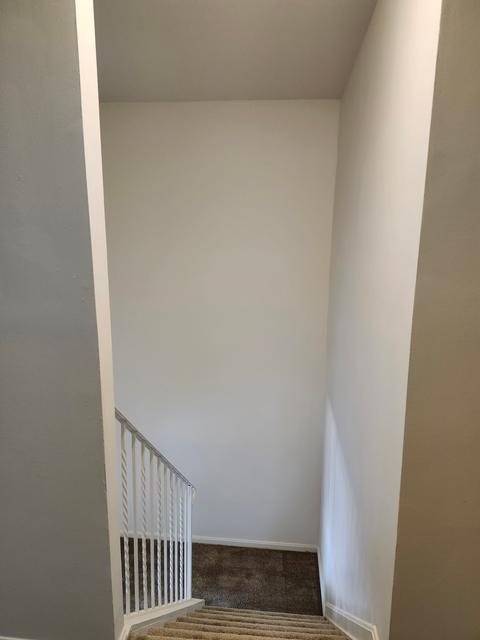
REJECT Stairwell dominated by a blank wall; no marketing value
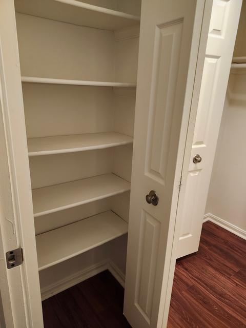
REJECT Linen closet interior — utilitarian
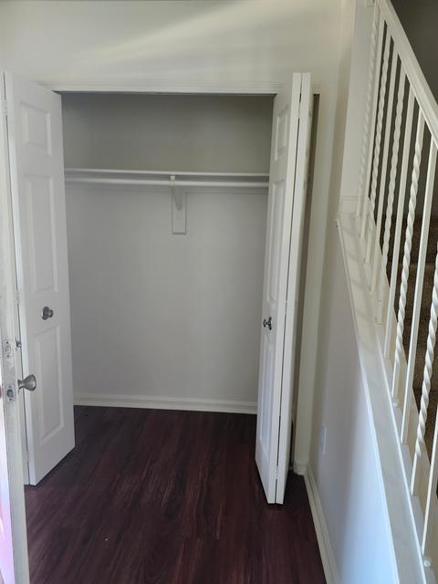
REJECT Under-stair coat closet — utilitarian
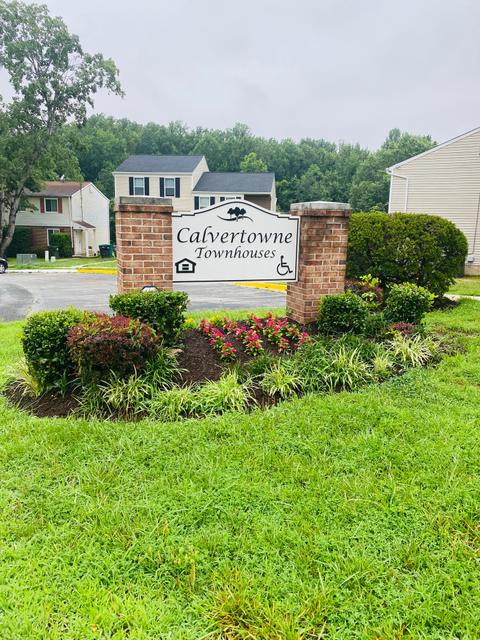
REJECT Near-duplicate of the kept sign shot; the other frame shows the lettering larger
Carroll LaPlata Village 13 photos
Dexter's note on the share: 'I need to get more photos.' The folder was assembled minutes before sharing; it holds no archive — 4 AI-processed sign/walkway renders and 3 unverified camera shots. The six photos on the live site are all ~320×240 previews awaiting full-size re-sends.
REVIEW Genuine 2856x2142 camera shot of the leasing office entrance with the Welcome sign, saved sideways and carrying a browser duplicate-download suffix, so provenance is unverified; confirm it is current and re-send the full roll.
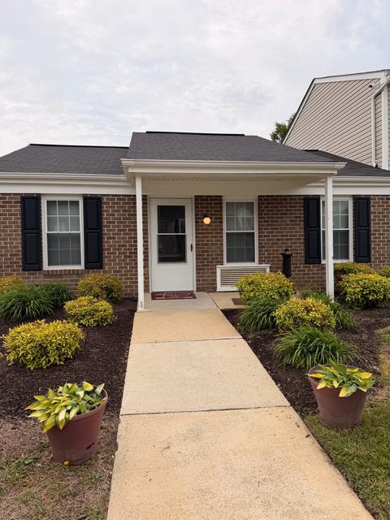
REVIEW Genuine 2856x2142 camera shot of the office building and front walkway with potted hostas, saved sideways so it needs rotating; provenance is unverified, confirm it is current and re-send the full roll.
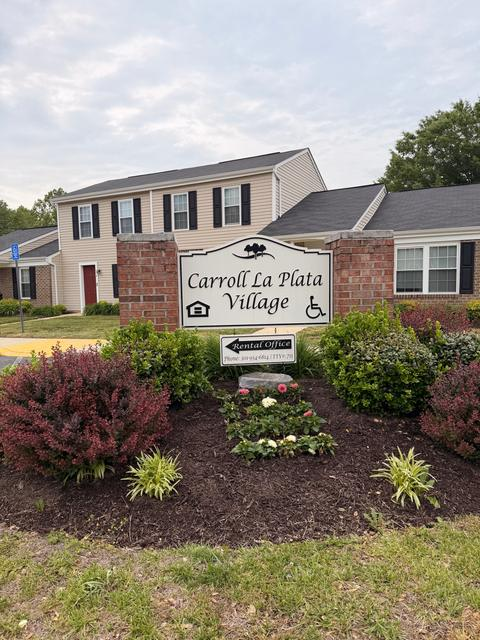
REVIEW Genuine 2856x2142 camera shot of the real entrance sign with the plaque legible at 301-934-6814, which is the authentic version of the subject the four PNGs redrew, but it is saved sideways and shot under flat overcast light; provenance is unverified, confirm it is current and re-send the full roll.
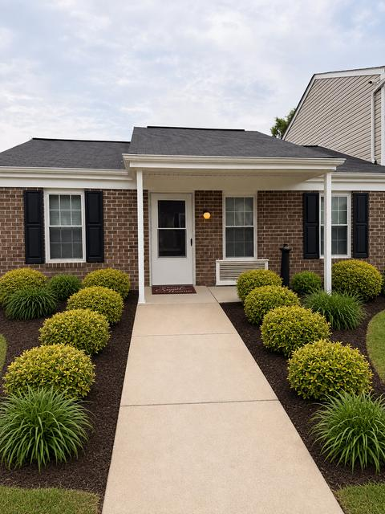
AI-DETECTED AI render at 1086x1448, and the doormat at the office door is covered in pseudo-script that never forms words.
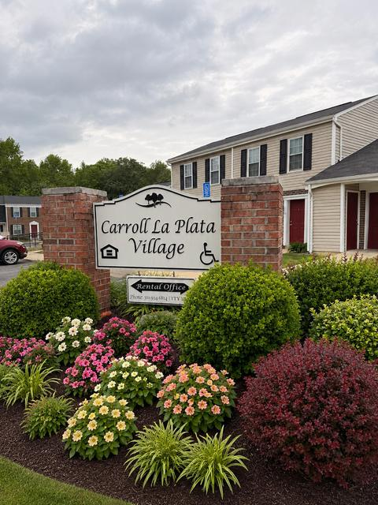
AI-DETECTED AI render of the same sign minutes later at 1086x1448, and the Rental Office plaque breaks down after "TTY" into an unreadable smear instead of the 711 number.
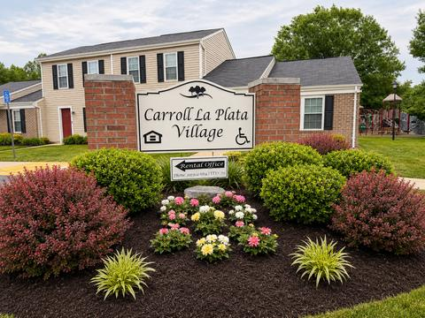
AI-DETECTED AI render at 1448x1086, and the playground at right dissolves into incoherent shapes while the lamp post beside it has no base and floats above the grass.
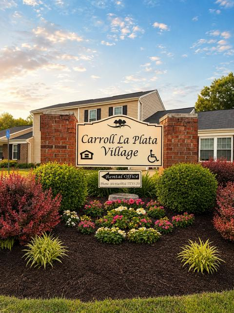
AI-DETECTED AI render at 1086x1448 with a synthesized golden-hour sky and a warm cream tint applied across the whole sign face, which is white in every real photo of it.
Colonial Beach Village 9 photos
No Drive folder was shared for Colonial Beach — the only property missing from the 8/6 share. The office was gathering unit-interior and street-view photos as of late July.
KEEP Currently live on the websiteKEEP Currently live on the website
Indian Head Elderly Apartments 34 photos
Refreshed 8/7: the four July 2026 landscape shots (courtyard, townhome row, patio) are the best photos in the whole batch — the courtyard is now the hero — and the July 2025 walkaround supplied full-size replacements for the old 320×240 tiles, including the laundry room.
KEEP Bathroom vanity, lights onKEEP Community room, dining tablesKEEP Community room, TV and mailboxesKEEP Community room, wide viewKEEP Tree-lined courtyard with benches — now the homepage heroKEEP Courtyard walkway, closer inKEEP Sunny townhome row with porchesKEEP Entry hall to the front doorKEEP Kitchen, full-sizeKEEP On-site laundry — full-size replacement for the old 320×240KEEP Living room with wide windowKEEP Picnic patio by the community buildingKEEP Monument sign — full-size replacement for the old thumbnailREVIEW Second angle of the same office and equally real looking, with the same 8/3 timestamp to confirm as an unedited original and the same 90 degree rotation to correct before use.AI-DETECTED Reads as a genuine unedited photo of the leasing office, with natural cable clutter and wall-art text that stays legible under magnification, but it carries an 8/3 timestamp inside the AI batch window and is stored rotated 90 degrees.AI-DETECTED 1122x1402 PNG matching the 8/3-4 processed batch, and the sign in frame reads Indian Head Village, which is the neighboring family property rather than Indian Head Elderly.REJECT Bedroom, badly underexposed — walls and carpet read near-blackREJECT Shower/toilet, dim — and the toilet seat is still in shipping plasticREJECT Community lounge seating, noticeably out of focusREJECT Dining-table corner — near-duplicate of the three kept community-room shotsREJECT Courtyard walk framed on the dumpsters and parking lotREJECT Near-duplicate of the kept courtyard shots, with a bare lawn patch up frontREJECT Picnic tables with a blown-out sky — near-duplicate of the kept patio shotREJECT Picnic tables with a blown-out sky — near-duplicate of the kept patio shotREJECT 453x453 listing-site thumbnail at ~27 KB of an empty carpeted bedroom, with the date 07/22/2025 and GPS coordinates burned into the top corner.REJECT 453x453 listing-site thumbnail at ~22 KB of a bedroom closet, with the same burned-in date and GPS stamp across the top.REJECT 320x240 website-resolution copy at ~80 KB of a winter exterior with a light pole in the foreground, so a full-size re-send is requested.REJECT 320x240 website-resolution copy at ~78 KB of the courtyard walkway in winter, and the full-size version is now live.REJECT 320x240 website-resolution copy at ~73 KB of a building row on an overcast winter day, so a full-size re-send is requested.REJECT 320x240 website-resolution copy at ~93 KB of the Indian Head Elderly entrance sign, and the full-size version is now live.REJECT 320x240 website-resolution copy at ~63 KB of the laundry room, and the full-size version is now live.REJECT 320x240 website-resolution copy at ~65 KB of the community room with the mailbox wall, and the full-size version is now live.REJECT 320x240 website-resolution copy at ~59 KB of the community room lounge end, and the full-size version is now live.REJECT 320x240 website-resolution copy at ~57 KB of the meeting room with the elephant canvas art, so a full-size re-send is requested.
Indian Head Village 26 photos
Refreshed 8/7: the July 2025 walkthrough found in the Drive folder gave the site its first real gallery (12 photos) and a real exterior hero — it is no longer the one-photo site. The seven tiny IMG_####.jpeg files in the folder are website re-downloads, superseded by these originals.
KEEP Tub/shower with handheld shower headKEEP Bedroom with windowKEEP Bedroom with double-door closetKEEP Corner bedroom, windows on two wallsKEEP Straight-on townhome front — now the homepage heroKEEP Townhome row from the parking lot, sunnyKEEP Covered entry with bay window (possibly the office — confirm)KEEP L-shaped oak kitchenKEEP Kitchen, range and back doorKEEP Living room, two windowsKEEP Playground, clean and emptyKEEP Monument sign with flower bedREJECT Playground with clothing draped over the equipment — the clean frame was keptREJECT Shot into the light — walls fall into shadow, windows blown outREJECT Bare wall corner — nothing to showREJECT Soft focus and tilted horizon — the same room was kept from a better frameREJECT Blurry stair shot, visibly out of focusREJECT Stairway looking up — usable but underexposed; weakest frame with 12 stronger keepersREJECT Rear service elevation — AC condensers, meters, utility doorsREJECT 320x240 website-resolution copy at ~80 KB of the entrance sign in late fall, superseded by the full-size 2025 original now live.REJECT 320x240 website-resolution copy at ~72 KB of the building row beside the rental office, superseded by the full-size 2025 originals now live.REJECT 320x240 website-resolution copy at ~86 KB of the playground seen from the lawn, superseded by the full-size 2025 original now live.REJECT 320x240 website-resolution copy at ~66 KB of the brick-centered townhouse row, superseded by the full-size 2025 originals now live.REJECT 320x240 website-resolution copy at ~67 KB of a townhouse row seen from the parking lot, superseded by the full-size 2025 originals now live.REJECT 320x240 website-resolution copy at ~93 KB of the playground and picnic tables, superseded by the full-size 2025 original now live.REJECT 320x240 website-resolution copy at ~82 KB of the playground slide and climbing wall, superseded by the full-size 2025 original now live.
Kent Island Village 27 photos
Dexter's note: 'They will need more updated pictures and original pictures.' The folder's only camera files are photos of a freshly repainted park bench (including a before/after collage) — maintenance documentation, not marketing. The 'Updated Marketing Pictures' subfolder holds 2 AI renders and 7 website re-downloads.
KEEP Currently live on the websiteKEEP Currently live on the websiteKEEP Currently live on the websiteKEEP Currently live on the websiteKEEP Currently live on the websiteKEEP Currently live on the websiteKEEP Currently live on the websiteKEEP Currently live on the websiteKEEP Currently live on the websiteKEEP Currently live on the websiteKEEP Currently live on the websiteKEEP Currently live on the websiteKEEP Currently live on the websiteKEEP Currently live on the websiteKEEP Currently live on the websiteREVIEW Real 4000x3000 camera frame of the freshly repainted bench, but it also shows a usable stretch of lawn, mature evergreens and an ornamental shrub bed, so it could work as a grounds shot if it is rotated 90 degrees and cropped away from the bench.AI-DETECTED AI-redrawn entrance sign at the batch's 1086x1448 PNG size, and the green street-name blades behind the brick pier read as pseudo-lettering ("5MLA R" and "WAr") instead of real street names.AI-DETECTED AI render at 1024x1024, with the foreground lawn painted as a flat synthetic carpet that meets the mulch on a hard straight seam and the spring rider reduced to an unresolved chrome blob.REJECT Real camera frame but it is maintenance documentation, not marketing material: the repainted bench fills the frame and the background is a gravel strip and the rear of a building.REJECT Three-panel before and after collage of the bench repaint with a decorative border, a reciprocating saw and an extension cord in one panel, so it is maintenance documentation rather than marketing material.REJECT ~185 KB website copy at 1043x695, too small for print or a full-width web hero.REJECT ~318 KB website copy at 1238x825, and the roof shingles and siding are rendered without texture, so this is a reduced copy of an already-processed image.REJECT ~221 KB website copy at 1108x766, too small for marketing use.REJECT ~105 KB website copy at 845x563, the smallest file in the set and unusable at any real display size.REJECT ~218 KB website copy at 1300x877 showing staged furniture that is not in the unit.REJECT ~209 KB website copy at 1097x731, and the frame is mostly empty parking lot.REJECT ~299 KB website copy at 1076x717, too small to reuse.
Leonard's Freehold 13 photos
Dexter's note: 'they will need more both pictures.' The folder holds just six files: three genuine 2025 camera shots from a single 23-second burst, plus a kitchen PNG matching the AI-app profile and two web-sized room images.
KEEP Real camera photo of the entrance sign with the building and lamp post behind it, already live on the site.KEEP Real camera photo, the tightest of the three, with the sign filling the frame and the plaque legible at 301-475-9005, already live on the site.KEEP Real camera photo, the widest of the three, showing the sign, the flower bed and the full building elevation, already live on the site.KEEP Currently live on the websiteKEEP Currently live on the websiteKEEP Currently live on the websiteKEEP Currently live on the websiteKEEP Currently live on the websiteKEEP Currently live on the websiteKEEP Currently live on the websiteAI-DETECTED AI render carrying the app's generic filename and 1024x1024 output size, and the cooktop shows three burner rings of mismatched size with no matching controls on the range.REJECT ~149 KB website copy at 713x756, too small to reuse.REJECT ~216 KB website copy at 1104x807, too small for marketing use, and it shows staged furniture that is not in the unit.
Leonardtown Village 29 photos
The Drive folder's 'Updated Marketing Pictures' is almost entirely AI renders (8 PNGs from the 8/3–4 session) plus web-sized copies; the real material is five July 2025 camera originals, most already live. 18 genuine National Night Out photos (8/4/2026) are in the folder but are not shown here — they picture residents and need consent review before any use. IMPORTANT: two of the images currently live on the site (kitchen and bedroom) were identified during this review as AI conversions from a 7/13 session and are marked red below.
KEEP Real Samsung Galaxy S23 FE photo of the entrance sign with the buildings behind it, and it is already live on the site as the sign photo.KEEP Real camera photo of the entrance sign, upright and sharp, and the best framed of the five July 10 sign shots.KEEP Byte for byte identical to 20250710_145612.jpg under a different name, so it is the same real camera file already published on the site.KEEP Currently live on the websiteKEEP Currently live on the websiteKEEP Currently live on the websiteKEEP Currently live on the websiteKEEP Currently live on the websiteKEEP Currently live on the websiteREVIEW Real camera photo of the entrance sign, but the file is stored rotated 90 degrees with no orientation tag, so it needs rotating before use.REVIEW Real camera close-up of the entrance sign, stored rotated 90 degrees and showing the same subject as the other July 10 sign shots.REVIEW Real camera close-up of the entrance sign, stored rotated 90 degrees and nearly identical to 20250710_145932.jpg.REVIEW Reads as a genuine phone photo of a bare stairwell, but it is stored rotated 90 degrees and the frame is mostly empty wall, so it needs rotating and a second look before use.REVIEW Looks like a straight phone photo of a vacant kitchen with consistent shadows and legible appliance branding, so it is a possible camera original from the 8/3 session and worth confirming provenance before use.AI-DETECTED AI staging that adds towels, a bath mat, potted plants and framed art to a vacant bathroom, and the mirror reflects a towel bar that does not exist in the room.AI-DETECTED AI staging that furnishes a vacant bedroom with an invented bed, nightstands, rug and artwork, and it is currently published on the site as the bedroom photo.AI-DETECTED AI redraw with hand-drawn looking door numerals and a coach lamp whose backplate dissolves into a smear on the siding.AI-DETECTED AI redraw in which the address plaque between the upstairs windows is a blob of pseudo-lettering with no readable numerals.AI-DETECTED AI redraw in which the coach lamp melts into the siding and the lantern glass is filled with a brown blob instead of a bulb.AI-DETECTED Second angle on the same vacant kitchen with no visible AI tells, so it is a possible camera original from the 8/3 session and worth confirming provenance before use.AI-DETECTED AI redraw that changes the real arched oak cabinets to flat panels and the brown laminate counter to dark stone, and it is currently published on the site as the kitchen photo.AI-DETECTED AI staging that fills a vacant living room with an invented sofa, armchair, coffee table, rug, television and wall art.AI-DETECTED AI staging with invented furniture and curtains, and the ceiling texture is redrawn as a swirling stucco pattern rather than the real popcorn finish.AI-DETECTED AI redraw in which the street name on the address plaque and the notices in the office window are smears of pseudo-letters with no readable words.AI-DETECTED AI redraw of the July 10 sign photo that invents the words Equal Housing Opportunity under the icon, which the real sign does not carry, and replants the bed with rows of flowers that are not there.AI-DETECTED LIVE ON THE SITE but identified 8/7 as an AI conversion of the real bedroom shot. Replace with a real photo.AI-DETECTED LIVE ON THE SITE but identified 8/7 as an AI conversion: the arched oak cabinets were redrawn as flat panels and the counter changed to dark stone. Replace with a real photo.REJECT A roughly 136 KB website copy at 729 by 866, matching the bathroom image already on the site pixel for pixel.REJECT A roughly 162 KB website copy at 904 by 685, matching the living room image already on the site pixel for pixel.
Lexington Village 7 photos
Dexter's note: 'they need more pictures.' The Drive folder held one keeper — the full-resolution entrance-sign original, swapped into the live site 8/7 — plus 15 National Night Out candids (not shown here; residents pictured, consent needed). Everything else on the site is still pre-renovation scans.
KEEP Currently live on the websiteALL WE’VE GOT Very dated print scan from the property binder. Not good enough, but it is all we have until a fresh photo arrives.ALL WE’VE GOT Very dated print scan from the property binder. Not good enough, but it is all we have until a fresh photo arrives.ALL WE’VE GOT Very dated print scan from the property binder. Not good enough, but it is all we have until a fresh photo arrives.ALL WE’VE GOT Very dated print scan from the property binder. Not good enough, but it is all we have until a fresh photo arrives.ALL WE’VE GOT Homepage banner is a pre-renovation print scan. Not good enough, but it is all we have until a fresh photo arrives.ALL WE’VE GOT Playground shot is a dated print scan. Not good enough, but it is all we have until a fresh photo arrives.
Pineview Apartments 27 photos
Dexter's note: 'They will need more original pictures but have updated pictures.' In practice the folder holds 5 AI renders (including two bedrooms with no source photo anywhere — invented rooms), 6 website re-downloads, and three real sign shots of the same subject. No new interiors or exteriors.
KEEP Real 3142x1900 camera photo of the entrance sign with the plaque legible at 301-638-1800, full flower beds and a building in the background, the best of the three sign shots.KEEP Currently live on the websiteKEEP Currently live on the websiteKEEP Currently live on the websiteKEEP Currently live on the websiteKEEP Currently live on the websiteKEEP Currently live on the websiteKEEP Currently live on the websiteKEEP Currently live on the websiteKEEP Currently live on the websiteKEEP Currently live on the websiteKEEP Currently live on the websiteKEEP Currently live on the websiteKEEP Currently live on the websiteREVIEW Real photo at full 3691x2768 resolution, but it covers the same sign as the file above and the bare mulch bed fills most of the frame, so use it only if a wider approach view is wanted.AI-DETECTED AI render at 1086x1448, and the mirror reflects a grab bar and a second towel bar that do not exist anywhere in the room.AI-DETECTED AI render at 1086x1448 showing crown molding, a designer headboard and layered bedding that do not match the actual Pineview units.AI-DETECTED AI render at 1448x1086 of a room with no source photo anywhere in the folders, so the space is invented, and it shows a wall-mounted TV and media console rather than a bedroom.AI-DETECTED AI render at 1086x1448 of a room with no source photo anywhere in the folders, so the space is invented, and the window blind behind the sheers has green foliage printed onto the slats.AI-DETECTED AI-redrawn entrance sign at 1086x1448, and the Rental Office plaque reads "Phone: 307-638-1800 | TTY:: 711" when the real plaque reads 301-638-1800 with a single colon.REJECT ~116 KB website copy at 685x731, too small to reuse.REJECT ~101 KB website copy at 621x692, the smallest file in the set and unusable at any real display size.REJECT ~283 KB website copy at 1402x935, too small for print or a full-width web hero.REJECT ~152 KB website copy at 939x729, and it shows a dark-cabinet kitchen with an island that does not match the current unit stock.REJECT ~157 KB website copy at 1076x647, too small to reuse.REJECT ~179 KB website copy at 1070x793, too small for marketing use.REJECT Third shot of the same entrance sign, reduced to 1531x1148 and with heavy dappled shade falling across the sign face.
Prince Frederick Senior Apartments 22 photos
The Drive folder's AI set is a 1:1 mirror of Katie's real July photos (someone even fixed the 'bedroo.jpg' typo while renaming). Five of Katie's originals are full-resolution and live; her kitchen, living room and bedroom are website-resolution copies, so those unit interiors still need a re-send — the AI versions of them contain fabricated detail.
KEEP Katie's full size camera photo of the community room, already live on the site, though the Drive file itself is stored sideways and the published copy is the rotated one.KEEP Katie's full size camera photo of the front building, upright and well exposed, and already live on the site.KEEP Katie's full size second angle on the community room, already live on the site, though the Drive file itself is stored sideways.KEEP Katie's full size camera photo of the laundry room, already live on the site, though the Drive file itself is stored sideways.KEEP Katie's full size camera photo of the monument sign, sharp and upright, and already live on the site.KEEP Currently live on the websiteKEEP Currently live on the websiteKEEP Currently live on the websiteKEEP Currently live on the websiteKEEP Currently live on the websiteKEEP Currently live on the websiteAI-DETECTED AI staging that furnishes a vacant bedroom with an invented bed, nightstands, dresser, mirror and artwork.AI-DETECTED AI redraw of the second community room angle in which the real wall postings are replaced by invented framed art.AI-DETECTED AI redraw in which every posting on the bulletin board and every framed certificate on the wall is rendered as pseudo-text with no readable words.AI-DETECTED AI redraw of the front building that erases the two outdoor AC condenser units visible in Katie's original and swaps the plantings for hostas.AI-DETECTED AI staging that adds an invented dining table and four chairs, a rug, a coffee maker, canisters and potted plants to a vacant kitchen.AI-DETECTED AI redraw in which the machine instruction notices on the wall are pseudo-text, the loose flyers on the floor are erased and a trash can is invented.AI-DETECTED AI staging that fills the vacant living room with an invented sofa, armchair, television, curtains, rug and an olive tree.AI-DETECTED AI redraw of Katie's sign photo in which the sparse mulch bed is replanted with dozens of invented flowering clumps and the dry lawn is turned uniformly green.REJECT A roughly 56 KB website resolution copy with a burned in date and GPS stamp across the top, so a full size re-send is still needed.REJECT A roughly 47 KB website resolution copy with a burned in date and GPS stamp across the top, so a full size re-send is still needed.REJECT A roughly 85 KB website resolution copy that also carries a burned in date and GPS stamp across the top, so a full size re-send is still needed.
Prince Frederick Village Apartments 19 photos
The entire Drive folder is the AI batch: Katie's 7/31 vacant-unit photos with AI furniture added, re-uploaded 8/6 into 'Updated Marketing Pictures'. The '1. Photos' folder that should hold her originals is empty. The real photos (live on the site since 7/31) came from Katie's own Drive folder.
KEEP Currently live on the websiteKEEP Currently live on the websiteKEEP Currently live on the websiteKEEP Currently live on the websiteKEEP Currently live on the websiteKEEP Currently live on the websiteKEEP Currently live on the websiteKEEP Currently live on the websiteAI-DETECTED AI redraw in which the resident parking sign is rendered as green pseudo-lettering with no readable words.AI-DETECTED AI version of the vacant hallway that hangs an invented framed landscape on the bare wall and smooths the visibly soiled carpet clean.AI-DETECTED AI staging of Katie's vacant kitchen that adds an invented round dining table and chairs, framed art, a coffee maker and potted plants.AI-DETECTED AI staging of the oak cabinet kitchen that adds an invented cutting board, fruit bowl, plants, rug and towel, and cleans the debris off the floor.AI-DETECTED AI staging of Katie's vacant living room with an invented sofa, armchair, rug, lamps and wall art, and the heavily soiled carpet rendered clean.AI-DETECTED AI staging of the same room with a different invented furniture set including a television, media console and dining table.AI-DETECTED AI staging of the same room again with invented blue patterned armchairs and different wall art, so the five living room files contradict each other.AI-DETECTED AI staging of the same room with yet another invented furniture arrangement, and the stained carpet in Katie's original shown as clean.AI-DETECTED AI staging of the same room from a fifth angle with an invented sectional, media console, floor lamp and olive tree.AI-DETECTED AI version of the same hallway with three invented framed pictures added and the stained carpet in Katie's original rendered clean.AI-DETECTED AI redraw of Katie's sign photo in which the bed of small young shrubs is replanted with rows of invented daylilies and pink flowering mounds.
Stevensville Village 17 photos
The folder holds 8 files, none with a camera filename: two AI sign renders 15 seconds apart, a walkway re-render from the AI window, and five web-sized room images. The '1. Photos' originals folder is empty.
KEEP Currently live on the websiteKEEP Currently live on the websiteKEEP Currently live on the websiteKEEP Currently live on the websiteKEEP Currently live on the websiteKEEP Currently live on the websiteKEEP Currently live on the websiteKEEP Currently live on the websiteKEEP Currently live on the websiteAI-DETECTED ~159 KB web-size copy of an AI render, with four drawer pulls floating on the blank side panel of the dresser where there are no drawers.AI-DETECTED ~206 KB web-size copy of an AI render in which the framed wall print reads HOME twice with a line of smeared pseudo-letters between the two words.AI-DETECTED ~113 KB web-size copy at 820x547 of an AI render, where the through-wall air conditioner's louvres are wavy fins that do not line up between the upper and lower grilles.AI-DETECTED Second AI render of the same moment, identical parked cars and tree but an entirely different invented flower bed, and the small building plaque above the sign is unreadable pseudo-lettering.AI-DETECTED AI redraw of the entrance sign in which the rental office number reads 410-645-0884, which is not the property's number of 410-643-5884.REJECT ~153 KB web-size copy at 965x777 whose six-print gallery wall has frames drawn at inconsistent sizes and spacing, and no camera original was supplied.REJECT ~219 KB synthetic courtyard view in which the buildings along both sides have no entry doors at all and the far building is a featureless slab.REJECT ~185 KB portrait version of the same synthetic courtyard, with blank doorless siding along the whole far range and a completely empty sky.
Taneytown Village 61 photos
The folder's real material is a 24-photo set from roughly August 2020 (one file is named 'Bulding 4 August 2020') — usable as a stopgap but six years old. The 'Updated Marketing Pictures' subfolder holds 20 AI renders generated 1:1 from those originals, including a 'Playground.png' with no real-photo counterpart.
KEEP Real 3289 x 2343 streetscape down the row of buildings in warm evening light, the strongest wide exterior available.KEEP Real, sharp 3329 x 2748 exterior of the 122 and 120 townhouse pair, large enough for a hero image.KEEP Real, sharp 4418 x 2953 brick and siding facade with clean landscaping, the highest resolution file in the set.KEEP Currently live on the websiteKEEP Currently live on the websiteKEEP Currently live on the websiteKEEP Currently live on the websiteKEEP Currently live on the websiteKEEP Currently live on the websiteKEEP Currently live on the websiteKEEP Currently live on the websiteKEEP Currently live on the websiteALL WE’VE GOT Very dated print scan from the property binder. Not good enough, but it is all we have until a fresh photo arrives.ALL WE’VE GOT Very dated print scan from the property binder. Not good enough, but it is all we have until a fresh photo arrives.ALL WE’VE GOT Very dated print scan from the property binder. Not good enough, but it is all we have until a fresh photo arrives.ALL WE’VE GOT Homepage banner is a faded print scan. Not good enough, but it is all we have until a fresh photo arrives.REVIEW Real camera photo dated August 2020 in the filename, still a clean building exterior if the property looks the same today.REVIEW Real photo of the entrance sign, correctly reading Managed by Fifth Management and Consulting, Inc., but shot on an overcast day with the No Trespassing sign visible behind it.REVIEW Real photo from about 2020 of the second bedroom with window and door, usable as a stopgap if the unit still looks like this.REVIEW Real second bedroom photo from about 2020, though most of the frame is blank wall and an open door.REVIEW Real photo of the vanity, mirror cabinet and light bar, but the file is stored rotated 90 degrees and needs to be turned upright.REVIEW Real photo from about 2020 showing the full kitchen with refrigerator, range and sink, usable as a stopgap if the unit still looks like this.REVIEW Real photo documenting the in-unit stacked washer and dryer, but the file is stored rotated 90 degrees and needs to be turned upright.REVIEW Real photo from about 2020 of the empty carpeted living room, usable as a stopgap if the unit still looks like this.REVIEW Real photo from about 2020 showing the living room, entry door and staircase, usable as a stopgap if the unit still looks like this.REVIEW Real photo from about 2020 of the empty master bedroom with window light, usable as a stopgap if the unit still looks like this.REVIEW Real photo from about 2020 showing the master bedroom with the closet open, usable as a stopgap if the unit still looks like this.REVIEW Real exterior photo but only 1247 x 1024, which is small for a hero and better suited to a gallery thumbnail.AI-DETECTED AI redraw of TAN-Bthrm 2.jpg with an invented plant, soap dispenser and towel, and a mirror whose reflection does not match the room in front of it.AI-DETECTED AI redraw of TAN-Bthrm 1.jpg with an invented shower curtain, towels, bath mat and toiletry bottles whose printed labels are unreadable pseudo-letters.AI-DETECTED AI redraw of TAN-Master Bdrm 1.jpg with an invented bed, bench, nightstands and dresser, and a mirror at the left edge that floats with no visible wall behind it.AI-DETECTED AI redraw of TAN-Bdrm 2-1.jpg that adds an accent chair, potted tree and framed print, and blurs the view through the window into an indistinct blob.AI-DETECTED AI redraw of TAN-Bdrm 2-2.jpg with a fully invented bedroom set of bed, two nightstands, lamps, dresser and rug, and the carpet recolored.AI-DETECTED AI redraw of taneytown2.jpg that deleted the resident garden figurines and walkway lights and replaced the plantings with generic ornamental grasses.AI-DETECTED AI redraw of taney-2.jpg with the sky flattened to solid blue, the shrubs reshaped and the flower bed invented.AI-DETECTED AI redraw of Bulding 4 August 2020.JPG in which the unit number reads 716 instead of the real 114 and the porch light is a melted blob.AI-DETECTED AI redraw of taney-1.jpg with the sky and lawn replaced and pink flower beds invented along the walk that do not exist in the original.AI-DETECTED AI redraw of taneytown.jpg where the second unit number is an illegible smear and the mansard shingles have been recolored from brown to near black.AI-DETECTED AI redraw of TAN-Kitchen 2.jpg that invents a dining table, two chairs, a console table and two pieces of wall art in what is a bare corner in the original.AI-DETECTED AI redraw of TAN-Kitchen 3.jpg that adds a lace door curtain, a framed botanical print, a potted plant and a hanging towel that are not in the real photo.AI-DETECTED AI redraw of TAN-Kitchen 1.jpg with invented staging props including a plant, fruit bowl, canisters, utensil crock and floor runner.AI-DETECTED AI redraw of TAN-Lvgrm 2.jpg with an invented sofa, television and media console, and the book spines on the console render as unreadable pseudo-text.AI-DETECTED AI redraw of TAN-Lvgrm 1.jpg with an entire invented living room set, sofa, armchair, rug, mirror and framed art, in a room that is empty in the original.AI-DETECTED AI generated streetscape with an unnaturally uniform lawn filling the lower half and a cloudless gradient sky, plus an unreadable pink smear where a yard sign should be.AI-DETECTED AI generated image with no real counterpart in the folder, and the community rules board on the post is filled with pseudo-letter scribbles that do not form words.AI-DETECTED AI redraw of TAN Sign.JPG in which the Equal Housing logo caption reads EOUAL HOUSING OPPORTUNITY and the flower bed has been repopulated with plants that are not there.AI-DETECTED AI redraw of TAN-Stairway.jpg that hangs four framed art prints and a handrail on walls that are bare in the real photo.AI-DETECTED AI redraw of TAN-Hallway-Closet.jpg that fills the empty linen shelves with invented stacks of folded towels and a wicker basket.REJECT 320 x 240 exterior at roughly 75 KB, a website copy far too small to publish.REJECT 320 x 240 playground shot at roughly 74 KB, a website copy far too small to publish.REJECT 320 x 240 sign photo at roughly 77 KB, a website copy far too small to publish.REJECT Empty closet interior stored rotated 90 degrees, with no marketing value.REJECT File is stored rotated 90 degrees and the tub surround is visibly yellowed and stained.REJECT Empty linen closet shelving stored rotated 90 degrees, with no marketing value.REJECT File is stored rotated 90 degrees and shows only an empty landing and bare walls.REJECT Labeled as a kitchen but the frame is a bare wall and two blank closet doors, with no kitchen visible.REJECT Frame is dominated by blank doors and the electrical panel, with only the edge of the range in view.REJECT Empty closet interior stored rotated 90 degrees, with no marketing value.REJECT Empty closet interior stored rotated 90 degrees, with no marketing value.REJECT File is stored rotated 90 degrees and shows only carpeted stair treads from a low angle, so the space is hard to read.REJECT Utility closet showing the air handler and water heater, which is maintenance documentation rather than marketing material.
Thurmont Village 46 photos
31 of the folder's 33 files are PNGs — 18 AI renders from the 8/3–4 sessions plus 13 interior PNGs at web sizes that look like website re-uploads. The only credible camera original is the 2.5 MB building-front JPG, which could upgrade the aging homepage banner.
KEEP Genuine 4171x2535 camera photo of the townhome row under real conditions, showing actual grounds, trash cans and a patio chair, and it is sharp enough to replace the aging homepage banner.KEEP Currently live on the websiteKEEP Currently live on the websiteKEEP Currently live on the websiteKEEP Currently live on the websiteKEEP Currently live on the websiteKEEP Currently live on the websiteKEEP Currently live on the websiteKEEP Currently live on the websiteALL WE’VE GOT Very dated print scan from the property binder. Not good enough, but it is all we have until a fresh photo arrives.ALL WE’VE GOT Very dated print scan from the property binder. Not good enough, but it is all we have until a fresh photo arrives.ALL WE’VE GOT Homepage banner is a dated print scan. Not good enough, but it is all we have until a fresh photo arrives.ALL WE’VE GOT Playground shot is a dated print scan. Not good enough, but it is all we have until a fresh photo arrives.ALL WE’VE GOT Very dated print scan from the property binder. Not good enough, but it is all we have until a fresh photo arrives.REVIEW Genuine photo of the real entrance sign but only 640x480 at ~186 KB, so it is useful as the reference for what the sign actually says and not as a published image.AI-DETECTED AI staging with towels, a plant and toiletries added, and a yellow smear runs along the front edge of the vanity top where the counter should meet the wall.AI-DETECTED AI staging of the same vanity as Bathroom 1.png, relit and dressed with a different towel, framed print and light fixture in each render.AI-DETECTED AI staging built on THU-Bathroom Photo #3.png, where the added bottle labels read as smeared pseudo-letters instead of real words.AI-DETECTED AI staging of a vacant bedroom in which the closet door is rendered as a floating white panel with no hinges and no frame behind it.AI-DETECTED AI staging built on THU-Master Bedroom Photo #1.png, the same three doorways with a bed, dresser, rug and bench painted into the empty room.AI-DETECTED AI exterior at the batch size of 1448x1086, where the porch lantern's interior is a smeared blob instead of a bulb and the lawn shows no wear, cars or residents.AI-DETECTED AI exterior at the batch size of 1448x1086, with a flawless uniform lawn and evenly spaced identical shrubs that do not match the real grounds visible in THU Front.jpg.AI-DETECTED AI staging at 1086x1448 with a coffee maker, produce, framed art and towels added to what is an empty counter in the unit photos.AI-DETECTED AI staging of the same dining corner as Kitchen 4.png, furnished with a completely different table, chairs and wall art in each render.AI-DETECTED AI staging of the same dining corner as Kitchen 3.png, furnished with a completely different table, chair and wall art in each render.AI-DETECTED AI staging with an invented framed print reading GOOD FOOD GOOD MOOD plus a shelf and sconce that do not exist in the unit.AI-DETECTED AI staging of a vacant kitchen at 1448x1086, with a fruit bowl, canisters, plants and a floor runner added that are not in the unit.AI-DETECTED AI staging at 1086x1448 with a sofa, rug, coffee table, TV console and lamp added to an empty room.AI-DETECTED AI staging built on THU-Living Room Photo #2.png, the same stair and front door with a sectional, rug, TV and lamps painted into the empty room.AI-DETECTED AI staging of a vacant living room with a full furniture set painted in, and the armchair at lower right is cut off by an edge that does not follow the floor line.AI-DETECTED AI exterior at 1383x1137 with a deep blue sky and flower beds added, and the mansard shingles rendered as a flat repeating pattern rather than real shingle courses.AI-DETECTED AI exterior at the batch size of 1448x1086, with a door wreath and flower beds painted in and every blade of grass rendered to the same length.AI-DETECTED AI redraw of the entrance sign at the batch size of 1122x1402, in which the EQUAL HOUSING line runs together into a single smeared glyph and the wheelchair symbol's wheel is left as a broken open circle.REJECT ~340 KB web-size PNG at 1015x760 of an empty bedroom corner with a burned-in 02/13/2023 date stamp and a black bar along the bottom edge.REJECT ~505 KB web-size PNG at 1014x792 of an empty bedroom with a burned-in 02/13/2023 date stamp, underexposed and framed on a blank wall.REJECT ~239 KB web-size PNG at only 569x759 with a burned-in 02/13/2023 date stamp, and it is the vanity frame that Bathroom 1.png and Bathroom 2.png were generated from.REJECT ~265 KB web-size PNG at only 569x753 with a burned-in 02/13/2023 date stamp, showing a bare toilet and vanity under flat overhead light.REJECT ~181 KB web-size PNG at only 573x759 with a burned-in 02/13/2023 date stamp, and it is the bare tub surround that Bathroom 3.png was generated from.REJECT ~624 KB web-size PNG at 1014x760 of a vacant kitchen with a burned-in 02/13/2023 camera date stamp, so it is a re-saved copy rather than camera output.REJECT ~753 KB web-size PNG at 1015x761 with a burned-in 02/13/2023 date stamp, and it is the vacant-unit frame that Kitchen.png was generated from.REJECT ~443 KB web-size PNG at 1017x761 with a burned-in 02/13/2023 date stamp, and it is the vacant dining corner that Kitchen 3.png and Kitchen 4.png were generated from.REJECT ~539 KB web-size PNG at 1016x755 of an empty carpeted room with a burned-in 02/13/2023 date stamp, too small and too dim to publish.REJECT ~574 KB web-size PNG at 1011x761 with a burned-in 02/13/2023 date stamp, and it is the vacant room that Living Room 3.png was generated from.REJECT ~431 KB web-size PNG at 1005x779 of an empty room with a burned-in 02/13/2023 date stamp and a black bar along the bottom edge.REJECT ~481 KB web-size PNG at 1021x758 with a burned-in 02/13/2023 date stamp, and it is the vacant bedroom that Bedroom 2.png was generated from.REJECT ~291 KB web-size PNG at 1024x761 of a bare wall and closet with a burned-in 02/13/2023 date stamp, with no marketing subject in frame.
Village Green Apartments 23 photos
Refreshed 8/7: the seven vacant two-bedroom interiors from July (shot by Pam Reeves) are now live with a first 'A look inside' band. 14 National Night Out files in the folder are not shown here (residents pictured). Still missing: a laundry-room shot.
KEEP Bathroom with tub surroundKEEP Second bedroomKEEP Entry with closets, looking into the kitchenKEEP Oak kitchen, lights on — now liveKEEP Living room toward the sliding door (dimmer angle, still reads well)KEEP Brighter living-room angle toward the front doorKEEP Primary bedroomKEEP Currently live on the websiteKEEP Currently live on the websiteKEEP Currently live on the websiteKEEP Currently live on the websiteKEEP Currently live on the websiteKEEP Currently live on the websiteKEEP Currently live on the websiteKEEP Currently live on the websiteKEEP Currently live on the websiteKEEP Currently live on the websiteREVIEW Sharp 2874x2078 real photo of the entrance sign in even overcast light, with the office phone legible and correct at 301-638-1800, so it is a candidate sign upgrade once provenance is confirmed.REVIEW Sharp real photo of the same sign under blue sky with the phone number correct, though at 1889x1417 it may itself be a resized copy, so it is a candidate sign upgrade once provenance is confirmed.AI-DETECTED 1448x1086 PNG from the 8/3-4 processed batch, with the Equal Housing fine print scrambled into pseudo-letters and the permit parking sign behind it redrawn as wobbly nonsense.AI-DETECTED 1475x1067 PNG from the 8/3-4 processed batch, and the office placard has been redrawn to read Phone: 301-638-1600 when the real sign reads 301-638-1800.REJECT Left third of the frame is the air-handler alcove with torn duct insulation and loose wiring — reads as unfinished maintenance workREJECT 1001x750 web-sized copy of the same sign, framed small against a large empty mulch bed, with the office phone line too soft to read.